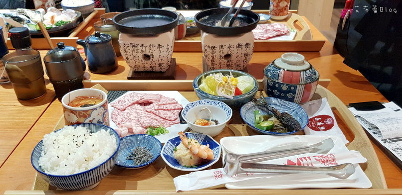

而且除了有專屬停車場外，竟然還有專屬鳥居，可以敲鐘祈求平安唷嘿嘿嘿(附近住戶會不會崩潰)
東港強的用餐桌數算是很多，但是再高峰時間用餐沒有全滿也有9成滿啊(切記一定要訂位以免向隅~)
因為三個老友一起吃飯聊天聊到都要打烊就拍到這樣的清場畫面(剩下一桌XD)
這是炸牛排定食，基本上定食除了附上白飯/湯品/茶品/甜品外，
還有季節時蔬/日式茶碗蒸/主廚小菜，所以一整個木盤放滿讓人感覺很不錯。
炸牛排的部分，這是安格斯牛，老實說我本來不是要點炸牛排的，跳虎想要吃巧克力和牛啊～
結果店員說是營運期間不提供巧克力和牛，我彷彿晴天霹靂.......
因為其他友人們點了日本和牛跟安格斯牛小排，只好點炸牛排了跟萩椛一架高下了XD
炸牛排的份量不算大，但是厚度十足，金黃的外皮鮮紅的肉面也是讓人口水直流。
